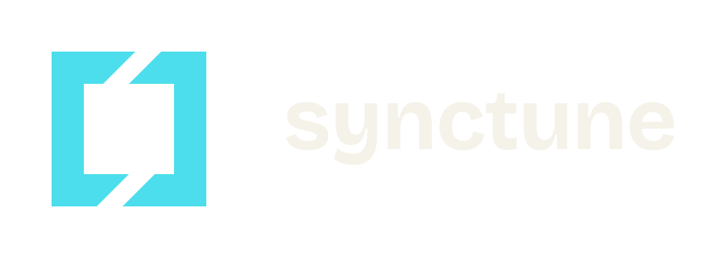

Sendbox
A sandbox for coding agents, integrating devcontainers and Kata Containers.
Explore Sendbox
Synctune / Open / Developer tools
For the local machine, the self-hosted app and the homelab. We build tools that help you run, inspect and control your own systems.
Start here / Public source
An orchestrator for local containers, self-hosted apps and homelabs. An alternative to proprietary container tooling, for people who want to run their own stack.
The rest of the toolbox
Find the source for public projects, or see what is still in development.
A sandbox for coding agents, integrating devcontainers and Kata Containers.
Explore SendboxSQLite for local and self-hosted apps, with a manager, gRPC API and web interface.
Explore SQL not-so-liteAn etcd v3-compatible store backed by SQLite, exploring a non-Raft clustered mode.
Source is not public.
A low-footprint resource monitor for macOS and the agentic development workflow.
Explore Kill SwitchA Chromium-based browser exploring a cleaner browsing experience and more control over your tools.
Source is not public.
Compress, convert, crop and resize images without an upload service in the middle.
Explore ImgToolsA practical set of PDF manipulation tools that keeps your files away from third-party uploads.
Explore PDFToolsEdit LaTeX with a real-time preview. Self-host it without a hosted service's compilation limits.
Explore LaTeX EditorAn Eisenhower matrix for working out what matters, what is urgent and what can wait.
Explore Eisen TodoPublic source is not a promise of a finished release. Some projects still live in Matteo's GitHub namespace while organization transfers are pending.
A branch of Synctune
Local development and self-hosting are not niche concerns here. They are the work. We care about being able to understand a tool, run it ourselves and change it when we need to.
About Synctune